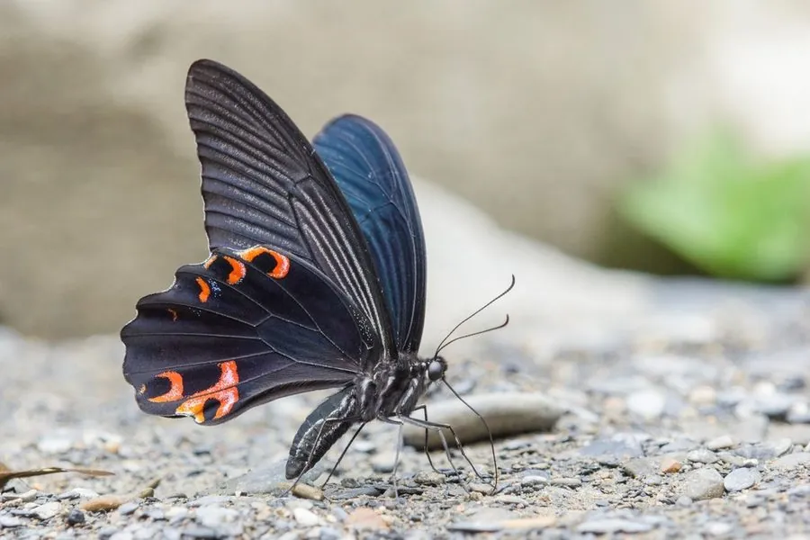

昆虫 · 动物界
蓝凤蝶 Papilio protenor

雄蝶翅面黑亮并泛蓝绿色光泽的大型凤蝶，后翅缘有红色月牙斑，幼虫取食柑橘等芸香科植物，亚洲常见。
- 分类
- 门节肢动物门纲昆虫纲目鳞翅目科凤蝶科属凤蝶属
- 栖息环境
- 林缘、山谷、溪流边与柑橘园，寄主植物附近
- 地理分布
- 中国南方、日本、朝鲜半岛和东南亚等地
- 保护级别
- 暂无评估
物种志
蓝凤蝶翅展约 9–12 cm，雄蝶翅面黑色，在阳光下泛出蓝绿色金属光泽，后翅外缘有一排红色月牙斑，尾突较短；雌蝶颜色较淡，翅面呈黑褐色，后翅红斑更明显，体型略大。
成虫常在花丛和溪边吸水，飞行稳健，雌蝶把卵产在柑橘、花椒、两面针等芸香科植物上，幼虫取食叶片，受惊时翻出臭角。它一年发生多代，以蛹越冬，分布在中国南方、日本、朝鲜半岛和东南亚等地，是亚洲常见的凤蝶之一。蓝凤蝶在园林和果园附近比较容易见到，幼虫数量少时为次要害虫，在自然界中受寄生蜂和鸟类控制。它的蛹呈绿色或褐色，伪装在枝叶间不易被发现，是典型的保护色。它常在雨后集体吸水。
形态与习性
- 食性幼虫取食柑橘、花椒等芸香科叶片；成虫吸蜜
- 翅展约 9–12 cm
- 识别雄蝶翅面黑亮泛蓝绿光泽，后翅缘有红色月牙斑
- 生活史一年发生多代，以蛹越冬
- 习性成虫常在溪边吸水，飞行稳健
趣味知识
- 蓝凤蝶雄蝶的翅面在阳光下会泛出蓝绿色的金属光泽。
- 它的后翅外缘有一排红色月牙斑，是重要的识别特征。
- 蓝凤蝶常在溪边湿沙上吸水，补充水分和矿物质。